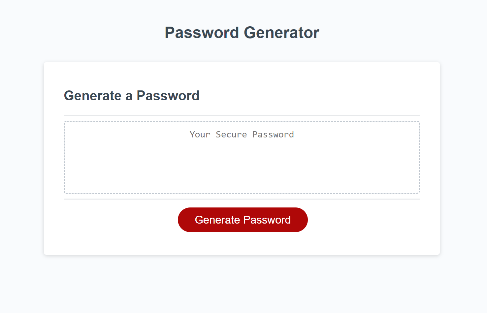

Work&Balance

Work&Balance was a collaborative project that featured the use of GitHub Jobs API and Google Places API. The purpose of this website is to provide a job search engine that also provides a glimpse of what your everyday workday breaks might look like. Recruiters and networkers alike may use this website to identify appropriate places to have meetings.
Password Generator
This project features a generator that asks for several criteria and generates a password according to the different selections that the user makes. It will then display the randomly generated password on the page.
See Stacey's GitHub profile here